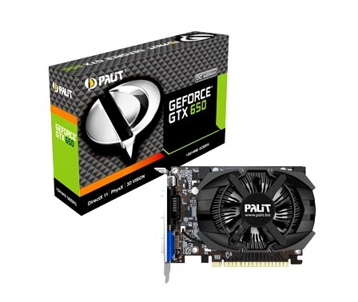
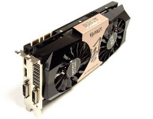

Новые видеокарты: GeForce GTX 660 и GTX 650

Компания Palit, отличный производитель графических адаптеров для персональных игровых компьютеров, представляет новые модели видеокарт GeForce GTX 660 и GTX 650.
За основу взята архитектура NVIDIA Kepler, известная по своей отличной как производительности, так и энергоэффективности. Серия представлена пятью новыми моделями карт,
это: GTX 660 2GB , GTX 660 OC 2GB, GTX650 OC 1GB, GTX 650 1GB, GTX 650 2GB. Каждый потребитель сможет выбрать модель карты для себя, в зависимости от своих предпочтений,
рода деятельности и бюджета. 660-е модели GeForce от Palit работают на 8% эффективнее своего конкурента от AMD – Radeon 7950 HD, и на 50% меньше используют электроэнергии,
сохраняя при этом высокую производительность в игровых компьютерах. Доступная цена, отличная мощность
и низкое потребление энергии – вот основные качества видеокарт 650-й и 660-й серии от Palit, сравнить цены можно
на странице игровые компьютеры.

Система охлаждения разнится своим вариантом исполнения, если у GTX 650 кулер открыт, то у GTX 660 вся плата защищена корпусом. Сам кулер – это 9 см вентилятор с
лопастями Turbofan, задачей которого является охлаждение процессора видеокарты, при этом сохраняя низкий уровень шума. Потребление энергии на 50 % снижено по сравнению с
видеокартами предыдущего поколения GeForce GTX 560-х. Новинки поддерживают все известные современные технологии, это: NVIDIA 3D Vision, NVIDIA PhysX®, Microsoft® DirectX® 11,
NVIDIA Surround (вывод картинки на 4 дисплея одновременно), сглаживание NVIDIA FXAA и TXAA, адаптивная вертикальная синхронизация в играх. GeForce GTX 660 поддерживает еще и технологию
NVIDIA GPU Boost – автоматическое увеличение частоты процессора «на ходу», если оно необходимо, тем самым достигается максимум производительности в компьютерных играх. Новинки
оборудованы шиной PCI Express 3.0, которая обеспечивает еще большую скорость передачи данных, при этом полностью совместима с PCI Express предыдущего поколения,
т.е. покупать новую материнскую плату не придется.
Читайте также:
Параметры, имеющие особое значение при покупке видеокарт.
Как выбрать монитор.
Сравнение видеокарт.
Следующая статья:
Для чего нужен бэкап?